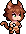
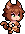
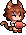
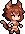
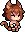
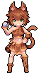
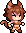
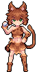
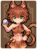

Wildcat Hunter
<野猫猎手>
ID: M12001 · Step: C · Weight: 10000 · CharacterRole: 输出 / DPS
Animated






Still



Thuộc tính (Class · Type · Element · Terrain)
| Class | Type | Element | Terrain |
|---|---|---|---|
| Archer (射手) | Spirit (生灵) | Earth (地系) | Forest (森林) |
Race name (used for talent filter):
猫耳族 / Feline(race name猫耳族≠ Type race-family生灵).
Codex (Insight)
投掷心得 / Throwing Arm (XD11001_014)
| Field | Value |
|---|---|
| Step | C |
| Type | 专属 / Unique |
| Race lock | — |
| Element/Class lock | 不限 |
| MaxLevel | 3 |
| Effect (canonical CN / EN, base value at L1) | 敏捷+2。 / AGI +2. |
| SpecifyRoleIDs | M12001 |
| Description | — |
Effect text is L1 base value. Higher levels usually scale linearly; verify in-game.
Stats
Base Stats (L1, no modifiers)
| Stat | Archer | Earth | Spirit | Forest | C | Base L1 |
|---|---|---|---|---|---|---|
| HP | 2 | 0 | 0 | 2 | 0 | 4 |
| STR | 0 | 2 | 0 | 0 | 0 | 2 |
| SPI | 0 | 2 | 0 | 2 | 0 | 4 |
| AGI | 0 | 0 | 2 | 0 | 0 | 2 |
| SPD | 8 | 0 | 2 | 0 | 0 | 10 |
| Toughness | 10 | 2 | 0 | 2 | 0 | 14 |
| LUK | 0 | 0 | 0 | 0 | 0 | 0 (only from gear / Lucky-Streak talent) |
| Starting Mana | — | — | — | — | — | 0 (game default) |
| Max Mana | — | — | — | — | — | 30 (game default) |
Sum of 5 axes from
BasicAttrDataTablefiltered byType='职业'/'元素'/'种族'/'地型'/'位阶'. HP/STR/SPI/AGI don't have keyword pages so labels stay plain.
Combat-stat mapping (Archer class): TBD — only Mage mapping (ATK←SPI · DEF←AGI · Weakness←STR) is verified. For other classes, the in-game ATK/DEF/Weakness columns map onto raw stats but the exact triple needs in-game datapoint verification.
| Pool | Archer | Earth | Spirit | Forest | C | Sum | → Adds to |
|---|---|---|---|---|---|---|---|
| initialAttack | 10 | 0 | 2 | 0 | 0 | 12 | TBD |
| initialDefence | 0 | 2 | 0 | 2 | 0 | 4 | TBD |
| initialWeak | 0 | 0 | 0 | 0 | 0 | 0 | TBD |
→ L1 displayed stats (raw + class combat-mapping): - Raw: HP 4 · STR 2 · SPI 4 · AGI 2 · SPD 10 · Toughness 14 · LUK 0 · Mana 10/30 - (Combat pools — Attack: 12, Defence: 4, Weak: 0 — fold into the mapped raw stat once class mapping is verified.)
Higher-level stats = base + level growth + Insight + passive/talent modifiers + gear. Growth formula per
BasicAttrDataTable.GrowthType1..10(cycle of 10) — exact application rule TBD pending in-game datapoint verification.
Skill (Active)
石块投掷 / Rock Throw (UniqueDataTable.M12001)
| Field | Value |
|---|---|
| SkillType | 攻击 / Attack |
| TargetType | 敌方 / Enemy |
| Target | 前排目标 / Front Target |
| MaxTarget | 1 |
| Times | 1 |
| Value | 4 |
| StatusLayer | 0 |
| ExtraValue1/2/3 | 4 / 0 / 0 |
| ActionType | 特殊攻击 / Special Attack |
Effect:
野猫猎手奋力投掷石块，优先对敌方前排目标造成4点伤害，并使目标失去4点韧性。
Hurls a rock with all her might. Targets the front enemy first. Deals 4 DMG and reduces the target's Toughness by 4.
Attack (Normal Attack)
普通攻击 / Normal Attack (BD30001) — UnlockStar 1
优先对敌方前排目标造成1点伤害。
Targets the front enemy first. Deals 1 DMG.
(Value0=1.)
Race
猫耳族 / Feline (BD20103) — UnlockStar 2
对低生命目标造成全部伤害与恢复+12。
Increase total DMG dealt and HP restored to low HP targets by 12.
(Value0=12.)
Trait
热情 / Fervent (BD10001) — UnlockStar 3
【属性】每10级使自身攻击属性+1。
[Stat] Gain +1 ATK per 10 levels.
(Value0=10, Value1=1.)
Title
进攻者 / Attacker (BD50201) — UnlockStar 4
【普攻】造成普通伤害+10。
[Attack] Deal +10 basic DMG.
(Value0=10.)
Perk
渴望强敌 / Thrill Seeker (BD40001) — UnlockStar 5
【增伤】对生命高于自身的目标造成全部伤害+10。
[DMG+] Deal +10 total DMG to targets with higher HP than self.
(Value0=10.)
Level-up Materials
| Slot | CN | EN |
|---|---|---|
| 1 | 魔力结晶 | Mana Crystal |
| 2 | 黑背鱼 | Darkback |
| 3 | 孢子菇 | Spore Shroom |
| 4 | 荧光鱼 | Glowfish |
Talents
Talent unlocks ở 5★, dùng 天赋果实 / Talent Fruit để mở + reroll. Pool eligible cho unit này = 100 total = 0 exclusive + 11 race + 21 class + 10 element + 58 generic.
Format: Effect column = canonical
TalentDataTable.Effect_ENwith highest-tier values filled (bold).Tierscolumn lists which tiers the talent has (e.g.CBAS,AS,S). Per-tier values in italic at end asValue0[/Value1[/Value2]]. Talent names are canonical fromName_EN— do NOT paraphrase.
Exclusive (0)
(none)
Race-restricted: Feline 猫耳族 (11 talents across 5 base IDs)
| Base ID | CN | EN | Tiers | Effect (highest-tier filled) & per-tier values |
|---|---|---|---|---|
| TF12501 | 睚眦必报 | Vengeful | S | Deal +1 Counter DMG after taking DMG. (S: 1) |
| TF12502 | 戏耍猎物 | Toy Prey | AS | +2 Follow-Up attacks when all enemies have lower SPD. (A: 1 · S: 2) |
| TF12503 | 撒娇卖萌 | Act Cute | AS | Take -10 Counter DMG and never prioritize becoming enemy target. (A: 5 · S: 10) |
| TF12504 | 九命猫妖 | Nine Lives | AS | Survive with 1 HP when taking fatal DMG for the first 9 times. Lose 50% Max HP. (A: 3/1/50 · S: 9/1/50) |
| TF12505 | 爆发速度 | Burst Speed | CBAS | Gain 200 stacks of Haste at battle start but remove 10 stacks at action end. (C: 50/10 · B: 100/10 · A: 150/10 · S: 200/10) |
Class-restricted: Archer 射手 (21 talents across 10 base IDs)
| Base ID | CN | EN | Tiers | Effect (highest-tier filled) & per-tier values |
|---|---|---|---|---|
| TF10301 | 固定炮台 | Fixed Turret | S | Deal +2 Follow-Up attacks but cannot take extra actions except after casting skill. (S: 2) |
| TF10302 | 精准追踪 | Precise Track | AS | Deal +1 Follow-Up DMG per 25 stacks of Precision. (A: 50/1 · S: 25/1) |
| TF10303 | 机会主义 | Opportunist | CBAS | Deal +8 total DMG during extra actions. (C: 2 · B: 4 · A: 6 · S: 8) |
| TF10304 | 爆发连击 | Burst Combo | S | The first basic attack each turn triggers +2 Follow-Ups. (S: 2) |
| TF10305 | 箭无虚发 | Never Miss | CBAS | Ignore 40 enemy DEF during basic attacks. (C: 10 · B: 20 · A: 30 · S: 40) |
| TF10306 | 风筝大师 | Kite Master | AS | Take -1 total DMG per 40 SPD. (A: 80/1 · S: 40/1) |
| TF10307 | 超距压制 | Long Range | AS | Deal +2 Follow-Up attacks to the farthest enemy. (A: 1 · S: 2) |
| TF10308 | 掩体躲藏 | Take Cover | AS | Take -8 total DMG while front allies are alive. (A: 4 · S: 8) |
| TF10309 | 皮靴大师 | Boot Master | AS | Gain +4 all stats from Boots gear. Boots gear's Basic Bond level +2. (A: 2/1 · S: 4/2) |
| TF10310 | 弹幕时间 | Bullet Screen | S | Gain +1 Follow-Up attacks this turn after casting skill. (S: 1) |
Element-restricted: Earth 地系 (10 talents across 6 base IDs)
| Base ID | CN | EN | Tiers | Effect (highest-tier filled) & per-tier values |
|---|---|---|---|---|
| TF11001 | 大地使者 | Land Herald | AS | Gain +2 stacks of Shield. All allies gain 4 stacks of Shield at turn start. (A: 1/2 · S: 2/4) |
| TF11002 | 防御瓦解 | Defense Break | AS | Apply +2 stacks of Vulnerable. Ignore 1 DEF per 15 stacks of Vulnerable when attacking. (A: 1/30/1 · S: 2/15/1) |
| TF11003 | 缠绕束缚 | Tangle Bind | AS | Apply +2 Slow stacks. Enemies deal -1 Follow-Up DMG per 25 stacks of Slow. (A: 1/50/1 · S: 2/25/1) |
| TF11004 | 锋利尖刺 | Sharp Thorns | AS | Gain +2 stacks of Thorns. Inflict +1 HP Loss per 30 stacks of Thorns gained. (A: 1/60/1 · S: 2/30/1) |
| TF11005 | 不动如山 | Immovable | S | Take -15 total DMG but cannot basic attack or basic heal. (S: 15) |
| TF11006 | 地震余波 | Aftershock | S | Apply 10 stacks of Stun after casting a skill on an enemy target. After each cast, Stun stacks inflicted are reduce by 2. (S: 10/2) |
Generic (no restriction) (58 talents across 19 base IDs)
| Base ID | CN | EN | Tiers | Effect (highest-tier filled) & per-tier values |
|---|---|---|---|---|
| TF10001 | 强而有力 | Strong | CBAS | +16 STR. Effect doubles if STR is at least 100. (C: 4/100 · B: 8/100 · A: 12/100 · S: 16/100) |
| TF10002 | 头脑清晰 | Clear Mind | CBAS | +16 SPI. Effect doubles if SPI is at least 100. (C: 4/100 · B: 8/100 · A: 12/100 · S: 16/100) |
| TF10003 | 反应迅速 | Quick Reflexes | CBAS | +16 AGI. Effect doubles if AGI is at least 100. (C: 4/100 · B: 8/100 · A: 12/100 · S: 16/100) |
| TF10004 | 身材紧实 | Fit Body | CBAS | +16 HP. Effect doubles if HP is at least 100. (C: 4/100 · B: 8/100 · A: 12/100 · S: 16/100) |
| TF10005 | 意志强韧 | Strong Will | CBAS | +16 Toughness. Effect doubles if Toughness is at least 100. (C: 4/100 · B: 8/100 · A: 12/100 · S: 16/100) |
| TF10006 | 四肢灵活 | Nimble Limbs | CBAS | +16 SPD. Effect doubles if SPD is at least 100. (C: 4/100 · B: 8/100 · A: 12/100 · S: 16/100) |
| TF10007 | 严阵以待 | Battle Ready | CBAS | Take -12 total DMG when in front position. (C: 3 · B: 6 · A: 9 · S: 12) |
| TF10008 | 好运连连 | Lucky Streak | CBAS | +8 Luck. Effect doubles if Luck is at least 50. (C: 2/50 · B: 4/50 · A: 6/50 · S: 8/50) |
| TF10009 | 核心位置 | Core Position | CBAS | Deal +8 total DMG when in mid position. (C: 2 · B: 4 · A: 6 · S: 8) |
| TF10010 | 玻璃大炮 | Glass Cannon | CBAS | Deal +12 total DMG but take +5 total DMG when in back position. (C: 3/5 · B: 6/5 · A: 9/5 · S: 12/5) |
| TF10011 | 魔力爆发 | Mana Surge | CB | Gain 30 Mana at turn 2 start. (C: 4/30 · B: 2/30) |
| TF10012 | 生命重组 | Life Rebuild | CB | Gain 100 HP at turn 2 start. (C: 4/100 · B: 2/100) |
| TF10013 | 意识重塑 | Mind Reshape | CB | Gain 100 Toughness at turn 2 start. (C: 4/100 · B: 2/100) |
| TF10014 | 谋而后动 | Think First | AS | Cannot act on turn 1 but gain +8 Action Mana on subsequent turns. (A: 4 · S: 8) |
| TF10015 | 调动情绪 | Mood Control | AS | Cannot act on turn 1 but gain +4 Hit Mana on subsequent turns. (A: 2 · S: 4) |
| TF10016 | 废物利用 | Scrap Use | AS | Gain +2 all stats per Bronze Bond. (A: 1 · S: 2) |
| TF10017 | 东拼西凑 | Patchwork | AS | Gain +2 all stats per Silver Bond. (A: 1 · S: 2) |
| TF10018 | 羁绊大师 | Bond Master | AS | Gain +2 all stats per Gold Bond. (A: 1 · S: 2) |
| TF10019 | 装备精通 | Gear Expert | AS | Gain +2 all stats from each Orange+ gear. (A: 1 · S: 2) |
Cross-references
- Active skill localization:
Activeskills_Name_M12001/Activeskills_Des_M12001 - In recruit pool:
SummonDataTable.M12001 - Other relics targeting this unit:
XD11001_014